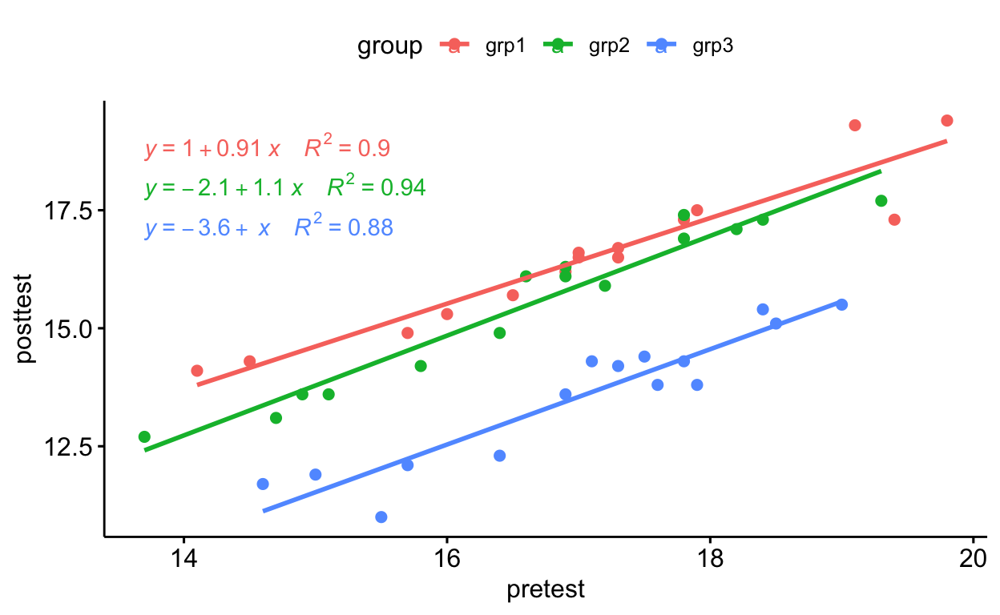

Linear Regression
Simple Linear Regression
Simple linear regression describes the relationship between the dependent random variable \(y\) and independent variable \(x\) is linear if \[ y_i = \beta_0+\beta_1x_i+\epsilon_i \] where we assume that the ``error’’ terms \(\epsilon_i\) are independently and identically distributed with a Gaussian distribution with \(E(\epsilon_i)=0\) and \(Var(\epsilon_i)=\sigma^2\), i.e. \[ \epsilon_i\stackrel{iid}{\sim} N(0,\sigma^2), \forall i. \] We can state this in slightly different terms as \[ y_i\sim N(\beta_0+\beta_1x_i,\sigma^2) \] where \(y_i\) is a Gaussian random variable for fixed values of \(x_i\) and the parameters \(\beta_0\) and \(\beta_1\). The variable \(y\) is sometimes referred to as the response, and the variable \(x\) is sometimes referred to as the predictor. The nomenclature can vary depending on circumstances, but it is always assumed that \(x's\) are fixed known quantities, not random variables.
Example
Student Success in university mathematics can depend on their academic achievement in high school maths. The following data relate students’ high school maths achievement to their first-year university maths achievement.
| Student | HS Maths | First-Year Maths |
|---|---|---|
| 1 | 39 | 64 |
| 2 | 43 | 79 |
| 3 | 22 | 51 |
| 4 | 63 | 83 |
| 5 | 56 | 93 |
| 6 | 47 | 88 |
| 7 | 27 | 63 |
| 8 | 74 | 97 |
| 9 | 34 | 55 |
| 10 | 53 | 74 |
R to fit the linear model and review the results using summary().
df<-tibble(y = c(64,79,51,83,93,88,63,97,55,74), x = c(39,43,22,63,56,47,27,74,34,53))
model <- lm(y~x,df)
summary(model)%>%
pander()
Estimation and Inference
Given a suspected linear relationship between two variables \(y\) and \(x\), we would like to answer several questions requiring statistical inference. As such, it is necessary to derive both estimators and a sampling distribution for those estimators.
We can employ the maximum likelihood method to derive a likelihood and log-likelihood for the two parameters \(\beta_0\) and \(\beta_1\) and \(\sigma^2\). \[ \begin{aligned} L(\beta_0,\beta_1,\sigma^2) &= \prod_{i=1}^n\frac{1}{\sqrt{2\pi\sigma^2}}\exp\left(-\frac{(y_i-\beta_0-\beta_1x_i)^2}{2\sigma^2}\right)\\ & = \left(\frac{1}{\sqrt{2\pi\sigma^2}}\right)^{n}\exp\left(-\frac{\sum_{i=1}^n(y_i-\beta_0-\beta_1x_i)^2}{2\sigma^2}\right) \end{aligned} \] and \[ \begin{aligned} l(\beta_0,\beta_1,\sigma^2)&=-\frac{n}{2}\log\left(2\pi\sigma^2\right)-\frac{\sum_{i=1}^n(y_i-\beta_0-\beta_1x_i)^2}{2\sigma^2}. \end{aligned} \] We can find the maximum likelihood estimates for these parameters by taking the derivative of the log-likelihood with respect to each parameter and setting them equal to \(0\). We can solve the resulting system of equations to give: \[ \begin{aligned} \hat{\beta}_0 & = \bar{y}-\hat{\beta}_1\bar{x}\\ \hat{\beta}_1 & = \frac{\sum_{i=1}^n(x_1-\bar{x})(y_i-\bar{y})}{\sum_{i=1}^n(x_i-\bar{x})^2}\\ s^2 & = \frac{\sum_{i=1}^n(y_i-\hat{\beta}_0-\hat{\beta}_1x_i)^2}{n-2} \end{aligned} \]
It is important to note that these estimators are, in fact, functions of \(x\), a known quantity and \(y\) a random variable and are, in fact, linear combinations of these. Given that we know the probability distribution of \(y\) is Gaussian, it follows that because the estimators are linear functions of \(y\), the estimators must also follow a Gaussian distribution.
Example
Following from our previous example, we note the following statistics \[ \bar{y} = 74.7, \qquad\bar{x} = 45.8\qquad\sum(x_i-\bar{x})(y_i-\bar{y}) = 2046.4 \\\qquad\sum(x_i-\bar{x})^2 = 2361.6 \] we can compute \[ \begin{align} \hat{\beta}_1 = & \frac{2046.4}{2361.6}=0.87\\ \hat{\beta}_0 = & 74.7-(0.87)(45.8) = 35.01\\ s^2 =&\frac{\sum(y_i-35.01-0.87x_i)^2}{n-2} = \frac{524.83}{8} = 65.6 \end{align} \]
Compare these results to the results for the model fit usinglm() in R.
summary(model)%>%
pander()
Assumptions
As stated above, there are explicit assumptions concerning the probability distribution of the residuals or errors that support the derivation of the sampling distributions for the estimates of the model parameters:
- The parameter estimates \(\hat{\beta}_0\) and \(\hat{\beta}_1\) are unbiased, i.e. the residuals \(e_i = y_i-\hat{\beta}_0-\hat{\beta}_1x_i\) have an expected value of \(0\), hence \(\sum_{i=1}^ne_i = 0\).
- The residuals \(e_i\) are independent, i.e. \(\mbox{Cor}(e_i,e_j) = 0, \forall i\neq j\)
- The residuals \(e_i\sim N(0,\sigma^2), \forall i\), that is the residuals follow a Gaussian distribution with \(E(e_i)=0\) and \(Var(e_i)=\sigma^2\).
Hence we say that the residuals are independent and identically distributed. Fit the predictive model and plot the results.
model_pred <- predict(model, interval = "prediction")
df.model <- tibble(resid = model$residuals,fitted.values = model$fitted.values, x = df$x,y = df$y,lwr = model_pred[,2], upr = model_pred[,3])
ggplot(df.model,aes(x = fitted.values, y = resid ))+
geom_point()+
geom_smooth(method = "lm")
ggplot(df.model,aes(sample = resid))+
geom_qq_line()+
geom_qq()
mean(df.model$resid)
var(df.model$resid)
Sampling distributions for \(\hat{\beta}_0\) and \(\hat{\beta}_1\)}
Given a known value for \(\sigma^2\), it can be shown that the sampling distributions for \(\hat{\beta}_0\) and \(\hat{\beta}_1\) are :::{.boxed} \[ \begin{aligned} \hat{\beta}_0&\sim N\left(\beta_0,\frac{\sigma^2\sum_{i=1}^nx_i^2}{\sum_{i=1}^n(x_i-\bar{x})^2}\right)\\ \hat{\beta}_1&\sim N\left(\beta_1,\frac{\sigma^2}{\sum_{i=1}^2(x_i-\bar{x})^2}\right) \end{aligned} \] :::
If we substitute the estimator \(s^2\), then we can see from prior examples that :::{.boxed} \[ \begin{aligned} \frac{\hat{\beta}_0-\beta_0}{s_{\beta_0}}&\sim t_{n-2}\\ \frac{\hat{\beta}_1-\beta_1}{s_{\beta_1}}&\sim t_{n-2} \end{aligned} \] noting that \[ \begin{aligned} s^2_{\beta_0} & = \frac{s^2\sum_{i=1}^nx_i^2}{\sum_{i=1}^n(x_i-\bar{x})^2}\\ s^2_{\beta_1} & = \frac{s^2}{\sum_{i=1}^2(x_i-\bar{x})^2}. \end{aligned} \] ::: Based on these we can construct confidence intervals and conduct hypothesis tests from our estimates \(\hat{\beta}_0\) and \(\hat{\beta}_1\). \(1-\alpha\) Confidence intervals have the form: :::{.boxed} \[ \begin{aligned} \hat{\beta}_0&\pm t_{n-2,\alpha/2}s_{\beta_0}\\ \hat{\beta}_1& \pm t_{n-2,\alpha/2}s_{\beta_1} \end{aligned} \] where \[ Pr(t<t_{n-2,\alpha/2}) = 1-\alpha/2 \] as previously defined. :::
Inference for the Slope and Intercept
For the Hypotheses \[ H_0: \beta_0 = 0\qquad\mbox{and}\qquad H_A:\beta_0\neq 0 \] the test statistic is \[ t = \frac{\hat{\beta}_0}{s_{\beta_0}}. \] For the hypotheses \[ H_0: \beta_1 = 0\qquad\mbox{and}\qquad H_A:\beta_1\neq 0 \] the test statistic is \[ t = \frac{\hat{\beta}_1}{s_{\beta_1}}. \] in both cases the rejection region is based on the \(t_{n-2}\) where we reject \(H_0\) if $ |t|>t_{n-2,/2}$. Most statistical software reports both a \(t\) test statistic and a \(p\)-value; both can be used to evaluate hypotheses.
Example
Recall our analysis in R
| Estimate | Std. Error | t value | Pr(>|t|) | |
|---|---|---|---|---|
| (Intercept) | 35.01 | 8.052 | 4.348 | 0.00245 |
| x | 0.8665 | 0.1667 | 5.199 | 0.0008234 |
| Observations | Residual Std. Error | \(R^2\) | Adjusted \(R^2\) |
|---|---|---|---|
| 10 | 8.1 | 0.7716 | 0.7431 |
Note that for \(\hat{\beta}_0\) \[
t = \frac{\hat{\beta}_0}{s_{\beta_0}}= \frac{35.0129}{8.0518} = 4.35
\] and for \(\hat{\beta}_1\) \[
t = \frac{\hat{\beta}_1}{s_{\beta_1}}= \frac{0.8665}{0.1667} = 5.20
\] The \(p\)-values are given in the table and can be used to perform the hypothesis tests, or we can note that for \(n=10\) and \(\alpha = 0.05\), \(t_{n-2,\alpha/2} = 2.31\) so we would reject the null hypotheses that \(\beta_0=0\) and \(\beta_1=0\).
We will see that in most cases, the testing related \(\beta_0\) are often not of interest, and we will see that test about the \(\beta_1\) are of most interest and provide a connection between linear regression and ANOVA.
Analysis of Variance for Linear Regression
Aside from inferential questions concerning the values of the \(\beta_0\) and \(\beta_1\), the next most useful question about our linear model is how well it fits the data. Suppose we extend the idea from ANOVA of explaining variation. In that case, it is natural to frame our goodness of fit question in terms of what proportion of the variation in \(y\) is explained by the model \(y = \beta_0+\beta_1x\).
This term is defined in terms of ratios of sums of squares as in ANOVA. Hence we extend some of the ideas from ANOVA to linear regression and use the definitions \[
\mbox{SST} = \sum_{i=1}^n(y_i-\bar{y})^2.
\] As in ANOVA, SST is the total sum of squares, which can be partitioned (as in ANOVA) into SSR, the sum of the squares of the regression, and SSE, the sum of the squares of the error. \[
\begin{aligned}
\mbox{SSR} &= \sum_{i=1}^n(\hat{y}_i-\bar{y})^2\\
& = \sum_{i=1}^n(\hat{\beta}_0+\hat{\beta}_1x_i-\bar{y})^2\\
& = \frac{\left(\sum_{i=1}^n(x_i-\bar{x})(y_i-\bar{y})\right)^2}{\sum_{i=1}^n(x_i-\bar{x})^2}
\end{aligned}
\] Because SST = SSE+SSR, we can define SSE = SST-SSR, which can show to be \[
\mbox{SSE} = \sum_{i=1}^n(y_i-\bar{y})^2- \frac{\left(\sum_{i=1}^n(x_i-\bar{x})(y_i-\bar{y})\right)^2}{\sum_{i=1}^n(x_i-\bar{x})^2}.
\] The mean squares terms are defined as the sum of squares divided by the degrees of freedom as shown:
| Source | Degrees of Freedom | Sum of Squares | Mean Squares |
|---|---|---|---|
| Regression | \(1\) | \(\frac{\left(\sum_{i=1}^n(x_i-\bar{x})(y_i-\bar{y})\right)^2}{\sum_{i=1}^n(x_i-\bar{x})^2}\) | \(\frac{\mbox{SSR}}{1}\) |
| Error | \(n-2\) | \(\sum_{i=1}^n(y_i-\bar{y})^2- \frac{\left(\sum_{i=1}^n(x_i-\bar{x})(y_i-\bar{y})\right)^2}{\sum_{i=1}^n(x_i-\bar{x})^2}\) | \(\frac{\mbox{SSE}}{n-2}\) |
| Total | \(n-1\) | \(\sum_{i=1}^n(y_i-\bar{y})^2\) |
Note that \(s^2\) is the MSE and is our best estimate of \(\sigma^2\).
Example
We can see the results in an ANOVA table
| Df | Sum Sq | Mean Sq | F value | Pr(>F) | |
|---|---|---|---|---|---|
| x | 1 | 1773 | 1773 | 27.03 | 0.0008234 |
| Residuals | 8 | 524.8 | 65.6 | NA | NA |
The Coefficient of Determination \(R^2\)
We can assess the regression model by computing the coefficient of determination, \(R^2\), which is
\[ R^2 = 1 - \frac{\mbox{SSE}}{\mbox{SST}} = \frac{\mbox{SSR}}{\mbox{SST}} \] which is the proportion of the total variation explained by the regression model.
We don’t typically assess any measures of uncertainty about the coefficient of determination but instead use it as a subjective measure. An \(R^2\) of \(1\) means that the regression model explains all the variation in \(y\), which is good in the sense that we can feel confident that our knowledge of \(x\) is a perfect explanation of \(y\). In practice, values of \(R^2\) close to \(1\) (over \(0.95\)) typically indicate that “over-fitting” in the model which can lead to erroneous results using the model. While we might think that small values of \(R^2\) are “bad”, an \(R^2\) of \(0.2\) could be quite good in some fields. Interpreting the coefficient of determination is not as straightforward as other statistical measures. It should be used as a guide rather than conclusive evidence in making decisions about the validity or utility of a model.
Example
We can compute the coefficient of determination as \[ \begin{aligned} R^2 &=\frac{\mbox{SSR}}{\mbox{SST}}\\ &=\frac{\mbox{SSR}}{\mbox{SSR+SSE}}\\ &=\frac{1773.27}{1773.27+524.83}\\ &=0.7716 \end{aligned} \] The interpretation of this is that \(77.16\%\) of the observed variation in \(y\), student outcomes in first-year university maths are explained by \(x\) student outcomes in high school maths.
Extract the results for \(R^2\) and \(R^2_{adj}\) from the model summary(). (Hint use the pluck() function and note that the variables in the summary are r.squared and adk.r.squared )
model%>%summary()%>%pluck("r.squared")
model%>%summary()%>%pluck("adj.r.squared")
Diagnostic Tools for Testing the Regression Results
The underlying assumptions about the distribution of the residuals and hence the sampling distributions of the parameter estimates have important implications for inference and, as we will see, using the regression model for prediction. Luckily several useful tools rely on using the residuals :::{.boxed} \[ e_i =y_i-\hat{\beta}_0-\hat{\beta}_1 \] available for exploring and testing the validity of these assumptions. :::
Normality
The first assumption to check is that the residuals from the model are from a Gaussian distribution. We can do this using a normal probability plot. A normal probability plot is a plot of the residuals against their expected value if they had come from a Gaussian distribution.
If the residuals are from a Gaussian distribution, they should fall more or less along a straight, diagonal line. This is accomplished by first sorting the residuals in ascending order, then standardising them \[ e_i^* = \frac{e_i}{\sqrt{s^2}} \] and plotting them against their corresponding quantiles from a standard Gaussian distribution.
Plot the residuals on a \(q-q\) plot
ggplot(df.model,aes(sample = resid))+
geom_qq_line()+
geom_qq()The use of this plot is not a rigorous test of normality versus non-normality. Instead, it can indicate potential deviance from the Gaussian assumption, particularly in the behaviour of the tails of the distribution. The results are not conclusive but should inform judgement when interpreting the model results.
Heteroskedasticity
The second residual plot we can use is to plot the fitted values of the model \[ \hat{y}_i = \hat{\beta}_0+\hat{\beta}_1x_i \] against the residuals.
Plot the fitted values versus the residuals
ggplot(df.model,aes(x = fitted.values,y = resid))+
geom_point()+
geom_smooth(method = "lm",se = FALSE)
The residuals should fall evenly along either side of a horizontal line centred at \(0\), with no evidence of trend or increase in magnitude as \(\hat{y}\) increases. This is to check the assumption that the variance of the residuals is equal for all observations, specifically that the variance is not a function of the expected value of the observation.
Other concerns
The two techniques of using normal probability plots and plots of the residuals versus the fitted values address two of the three assumptions about the residuals: the unbiasedness of the regression model and the constant variance of the residuals. Tests of independence are technically possible and, while beyond the scope of this material, should be used in cases where the independent variables are temporally or spatially referenced. The specific tools for modelling time-series or spatial data exist and should be used where appropriate.
Estimation and Prediction
The most useful aspect of linear regression, aside from the ability to infer linear relationships between variables, is to make inferences about the expected value of observations via a sampling distribution and the make predictions of values for the dependent variable \(y\) given unobserved values of the independent variable \(x\). These estimated expected values and predictions have known sampling distributions, which can be used to make inferences about their true values. These aspects make linear regression (and indeed all statistical models) particularly useful in real-world decision making.
Sample Statistics and Inference for Estimated Values of \(y\)
The estimated expected value of \(y_i\) is \[ \hat{y}_i = \hat{\beta}_0+\hat{\beta}_1x_i \] which is a linear function of two random variables \(\hat{\beta}_0\) and \(\hat{\beta}_1\), both of which have known Gaussian sampling distributions. It is interesting to note that both \(\hat{\beta}_0\) and \(\hat{\beta}_1\) are linear functions of the random variable \(y\), so in fact, the estimated expected value \(\hat{y}\) is a linear function of the random variable \(y\).
The resulting standard error of \(\hat{y_i}\) is \[
s_{\hat{y_i}} = \sqrt{s^2\left(\frac{1}{n}+\frac{(x_i-\bar{x})^2}{\sum_{i=1}^n(x_i-\bar{x})^2}\right)}
\]
and confidence intervals and hypothesis testing will be based on the sampling distribution \[
\frac{\hat{y}_i-E(y_i)}{s_{\hat{y}_i}}\sim t_{n-2}
\]
Hypothesis testing is moot, to a certain extent. We are more interested in the confidence intervals or confidence band for the fitted values.
The \((1-\alpha)\%\) confidence interval for a fitted value is \[ \hat{y}_i\pm t_{n-2,\alpha/2}s_{\hat{y}_i}. \]
Note that the value for \(s_{\hat{y}_i}\) depends on the squared distance between \(x_i\) and \(\bar{x}\), thus the confidence interval is narrowest where \(x_i=\bar{x}\), or in other words we are most confident of our estimates for values of \(x\) closest to \(\bar{x}\).
Example
We can plot the data in ggplot() and note that when we invoke the geom_smooth(method = ``lm'', se = TRUE) geometry, the \(95\%\) confidence band is automatically added.
ggplot(df.model,aes(x=x,y=y))+
geom_point()+
geom_smooth(method = "lm")
Sample Statistics and Inference for Predicted Values of \(y\)
If we want to predict a value of \(y\) for \(x^*\) a specific (unobserved ) value of \(x\), the prediction is \[ y^* = \hat{\beta}_0+\hat{\beta}_1x^* \] there is additional uncertainty, as we are making a prediction rather than estimating an expected value. In this case, the standard error of the prediction is \[ s_{y^*} = \sqrt{s^2\left(1+\frac{1}{n}+\frac{(x^*-\bar{x})^2}{\sum_{i=1}^n(x_i-\bar{x})^2}\right)}. \]
The \((1-\alpha)\%\) prediction interval is then \[ \hat{y}_i\pm t_{n-2,\alpha/2}s_{y^*}. \]
If we add the equivalent prediction interval or band, it becomes obvious that the prediction intervals are much wider than the confidence intervals. It is difficult to see in this plot, but the prediction interval also widens as our predictions get farther and farther from \(\bar{x}\).
Try this in R
ggplot(df.model, aes(x, y))+
geom_point() +
geom_line(aes(y=lwr), color = "red", linetype = "dashed")+
geom_line(aes(y=upr), color = "red", linetype = "dashed")+
geom_smooth(method=lm, se=TRUE)
ggplot(df.model, aes(x, y))+
geom_point() +
geom_ribbon(aes(xmin = min(x), xmax = max(x), ymin = lwr, ymax = upr), alpha = 0.1)+
geom_smooth(method = lm, se = TRUE)Prediction intervals are wider than confidence intervals and exhibit the same property of widening as \(x^*\) increases in distance from \(\bar{x}\). Caution should be exercised when relying on predictions to make decisions, especially if these predictions are extrapolations for points outside the domain of the data. History is rife with examples of catastrophe that follows from this see here.
Linear Regression and Analysis of Covariance (ANCOVA)
ANOVA is the process of analysing the effects of discrete factors on dependent variables. Still, in many cases, other (continuous) covariates should be accounted for in our analysis. For instance, the treatments may be randomly assigned in a test of several different treatments for a medical condition. However, researchers still might want to take individual participants’ ages into account when assessing the effects. In this case, we can use a technique called the analysis of covariance or ANCOVA to account for or control for these extraneous covariates.
In this case, the traditional single-factor ANOVA model is \[ y_{ij} = \alpha_i+\epsilon_{ij} \] where \(\alpha_i\) represents the \(i\)th treatment mean. Note that in some literature, authors will write the same model as \[ y_{ij} = \mu+\tau_i+\epsilon_{ij} \] where \(\mu\) is the overall mean of the dependent variable, and the treatment effects, \(\tau_i\), are constrained such that \(\sum\tau_i = 0\). These models are equivalent; the only difference is in the interpretation of the results as \(\alpha_i \equiv \mu+\tau_i\).
If we wanted to account for some covariate effects, we would then add a term to the model \[ y_{ij} = \alpha_i+\beta(x_{ij}-\bar{x})+\epsilon_{ij}. \] To adjust or control for the effects of the covariate values \(x_{ij}\). The resulting total sum of squares can then be partitioned into the sum of the squares of the treatments (SSTR), the sum of the squares of the covariates (SSR) and the sum of the squares of the error (SSE). The results are presented in a table similar to an ANOVA table, with the same calculation and interpretation of the \(F\) statistics.
The addition of the covariates can increase the power of the test in detecting treatment effects and is thus useful in many situations. But we should note that all the assumptions and constraints of linear regression (regarding the independence and homogeneity of the residuals and their normality) apply to the covariate effects in the model.
Assumptions The standard assumptions from linear regression apply to ANCOVA. We assume that the slope, \(\beta\), is the same for all levels of treatment. There is an additional assumption that is included; the homogeneity of the slopes.
Example
Researchers investigated the effects of exercise programs on anxiety levels. Individuals were allocated to three different exercise programs: low, medium, and high-intensity workouts. Experimenters measured the individuals’ anxiety levels before they began their exercise regimes and after completing their programs. Because the same individuals were measured pre and post-program, their pre-program results need to be considered in analysing the data.
First, we examine the assumption of the homogeneity of the slopes, which we can do graphically.
data("anxiety", package = "datarium")
anxiety[14,"posttest"] <- 19
names(anxiety)<-c("id","group","pretest", "t2", "t3", "posttest")
anxiety$posttest<-anxiety$t3
ggscatter(
anxiety, x = "pretest", y = "posttest",
color = "group", add = "reg.line"
)+
stat_regline_equation(
aes(label = paste(..eq.label.., ..rr.label.., sep = "~~~~"), color = group)
)
#> `geom_smooth()` using formula 'y ~ x' As we can see, all the slopes are approximately equal (1,1.1,1).
Next, we can perform the ANCOVA analysis
model <- lm(posttest~group+pretest, anxiety)
model%>%anova()%>%pander()
Note that if we just perform a single factor ANOVA using just the group, we still see that it is significant:
model2 <- lm(posttest~group, anxiety)
model2%>%anova()%>%pander()
But note that in the ANOVA, the residual sum of squares is considerably larger than for the ANCOVA, indicating a substantial amount of variance in the outcomes explained by the pre-program test results.
Worksheet Practical Question 1
For the data sapphire featuring Young’s modulus (g) measured at various temperatures (t) for sapphire rods, fit a linear relationship \(g = \beta_0+\beta_1t\). Find the confidence intervals for the parameter estimates, and examine the residuals.
sapphire
model<-lm(Young~Temp, data = sapphire)
model%>%pander()
model%>%coef()%>%pander()
model%>%confint()%>%pander()
sapphire.model<-mutate(sapphire,resid = model$residuals, fitted.values = model$fitted.values)
ggplot(sapphire.model,aes(x = fitted.values, y = resid))+
geom_point()+
geom_smooth(method = "lm", se = FALSE)
ggplot(sapphire.model,aes(sample = resid))+
geom_qq()+
geom_qq_line()
ggplot(sapphire.model)+
geom_histogram(aes(x = resid))
Worksheet Practical Question 2
The stopping distance (y) of an automobile on a certain road was studied as a function of velocity (Brownlee, 1960). Fit y and \(\sqrt{y}\) as a linear function of velocity and examine the residuals in each case. Which fits better, and can you think of a reason why? The data are in the datasetbrake.
brake
model<-lm(distance~velocity, brake)
model%>%pander()
brake.model<-mutate(brake,resid = model$residuals, fitted.values = model$fitted.values)
ggplot(brake.model,aes(x = fitted.values, y = resid))+
geom_point()+
geom_smooth(method = "lm", se = FALSE)
ggplot(brake.model,aes(sample = resid))+
geom_qq()+
geom_qq_line()
ggplot(brake.model)+
geom_histogram(aes(x = resid))model<-lm(sqrt(distance)~velocity, brake)
model%>%pander()
brake.model<-mutate(df,resid = model$residuals, fitted.values = model$fitted.values)
ggplot(brake.model,aes(x = fitted.values, y = resid))+
geom_point()+
geom_smooth(method = "lm", se = FALSE)
ggplot(brake.model,aes(sample = resid))+
geom_qq()+
geom_qq_line()
ggplot(brake.model)+
geom_histogram(aes(x = resid))Worksheet Practical Question 3
Chang (1945) studied the rate of sedimentation of amoebic cysts in water in various of various temperatures. Fit an ANOVA model just considering Temperature, then fit an ANCOVA model including Diameter. Are the assumptions of the ANCOVA model met? Examine the residuals as well.cysts
model <- lm(time~Temp,cysts)
model%>%anova()%>%
pander()
model <- lm(time~Temp+Diameter,cysts)
model%>%anova()%>%
pander()
cysts.model<-tibble(cysts,resid = model$residuals,fitted.values = model$fitted.values)
ggscatter(
cysts.model, x = "Diameter", y = "time",
color = "Temp", add = "reg.line"
)+
stat_regline_equation(
aes(label = paste(..eq.label.., ..rr.label.., sep = "~~~~"), color = Temp)
)
ggplot(cysts.model,aes(x = fitted.values,y = resid))+
geom_point()+
geom_smooth(method = "lm",se = FALSE)
ggplot(cysts.model,aes(sample = resid))+
geom_qq()+
geom_qq_line()
ggplot(cysts.model,aes(x = resid))+
geom_histogram()
What do you think of these results?
Additional Questions for Practice
- The concentration of asbestos fibres is important to environmental health. There are two methods for measuring the concentration of small asbestos fibres: scanning electron microscope (SEM) and phase-contrast microscope (PCM). Are the two methods equivalent? Assume that the SEM results are a “gold standard”. What do your results tell you about how the PCM compares to SEM? What aspects of the model should you look at to determine this? The data are in the dataset
asbestos
asbestos
model <- lm(PCM~SEM, asbestos)
model%>%
summary()%>%
pander()
asbestos.model <- tibble(asbestos,resid = model$residuals, fitted.values = model$fitted.values)
ggscatter(
asbestos.model, x = "SEM", y = "PCM",
add = "reg.line"
)+
stat_regline_equation(
aes(label = paste(..eq.label.., ..rr.label.., sep = "~~~~"))
)
ggplot(asbestos.model,aes(x = fitted.values, y = resid))+
geom_point()+
geom_smooth(method = "lm",se = FALSE)
ggplot(asbestos.model,aes(sample = resid))+
geom_qq_line()+
geom_qq()
- A proving ring is a device for measuring load based on deflection. The data set
provingringresults include the deflection for several know loads and three separate repetitions (runs). Fit a linear model relating the deflection to the load. Is there any evidence of hysteresis? Examine the model results and the residuals, is there any way to improve the results, e.g. a way to more accurately predict the deflection from the load?
provingring
ggplot(provingring,aes(x = Load,y = Deflection))+
geom_point()+
geom_smooth(method = "lm",se = TRUE)
model <- lm(Deflection~Load+run,provingring)
model%>%
anova()%>%
pander()
provingring.model<-tibble(provingring,resid = model$residuals,fitted.values = model$fitted.values)
ggplot(provingring.model,aes(x = fitted.values, y = resid))+
geom_point()+
geom_smooth(method = "lm",se = TRUE)
ggplot(provingring.model,aes(sample = resid))+
geom_qq()+
geom_qq_line()